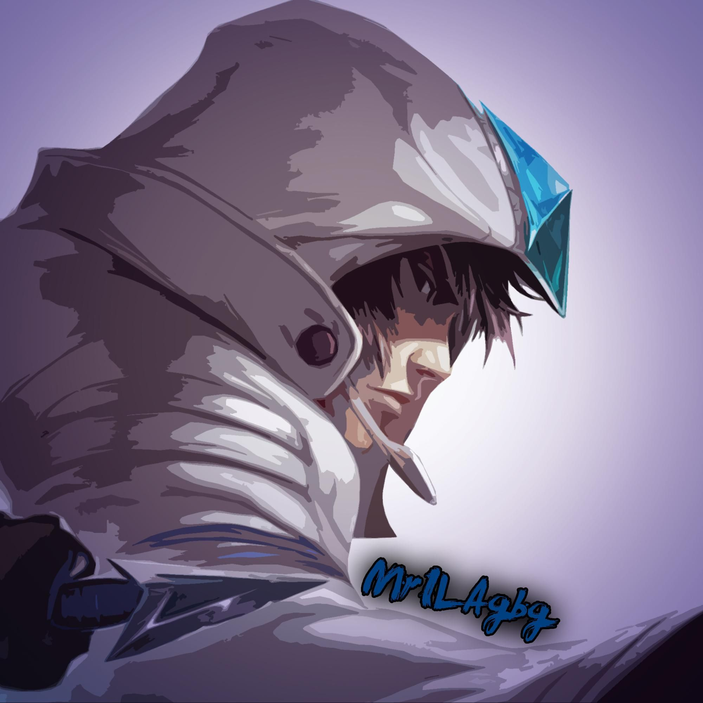
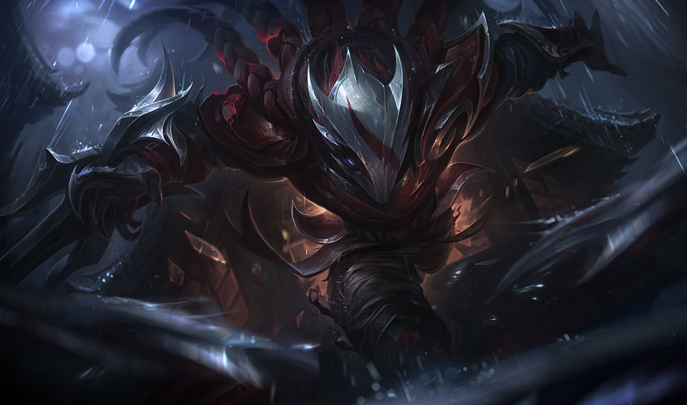
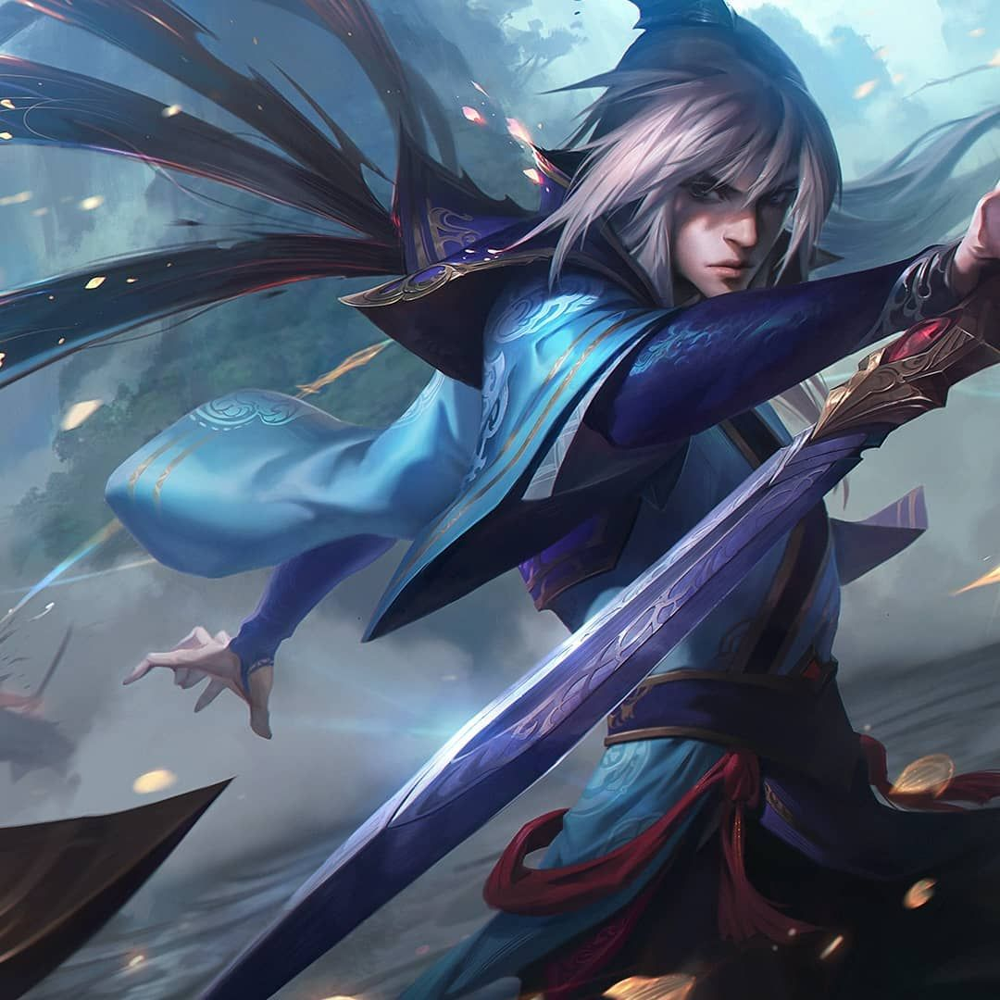
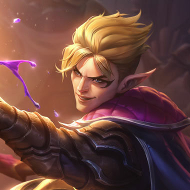
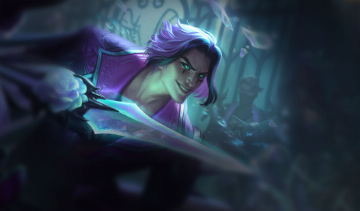
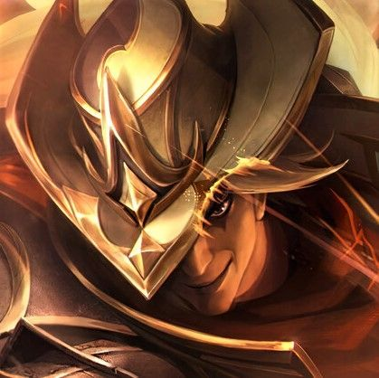
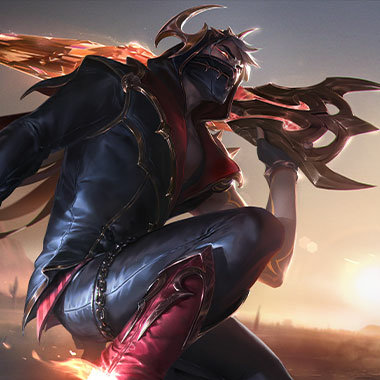
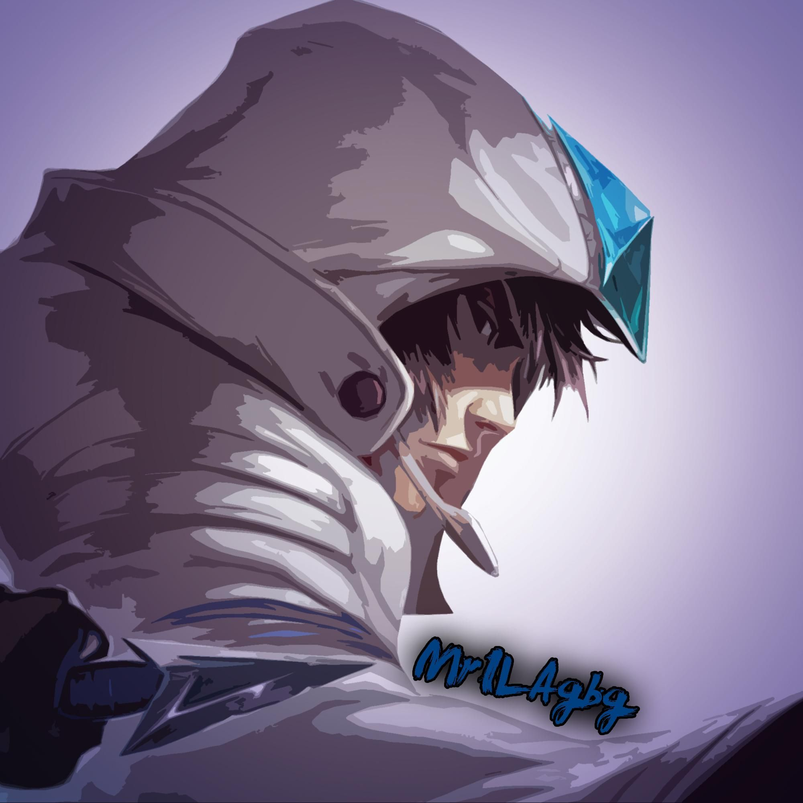
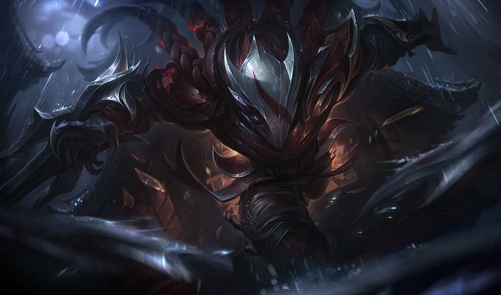
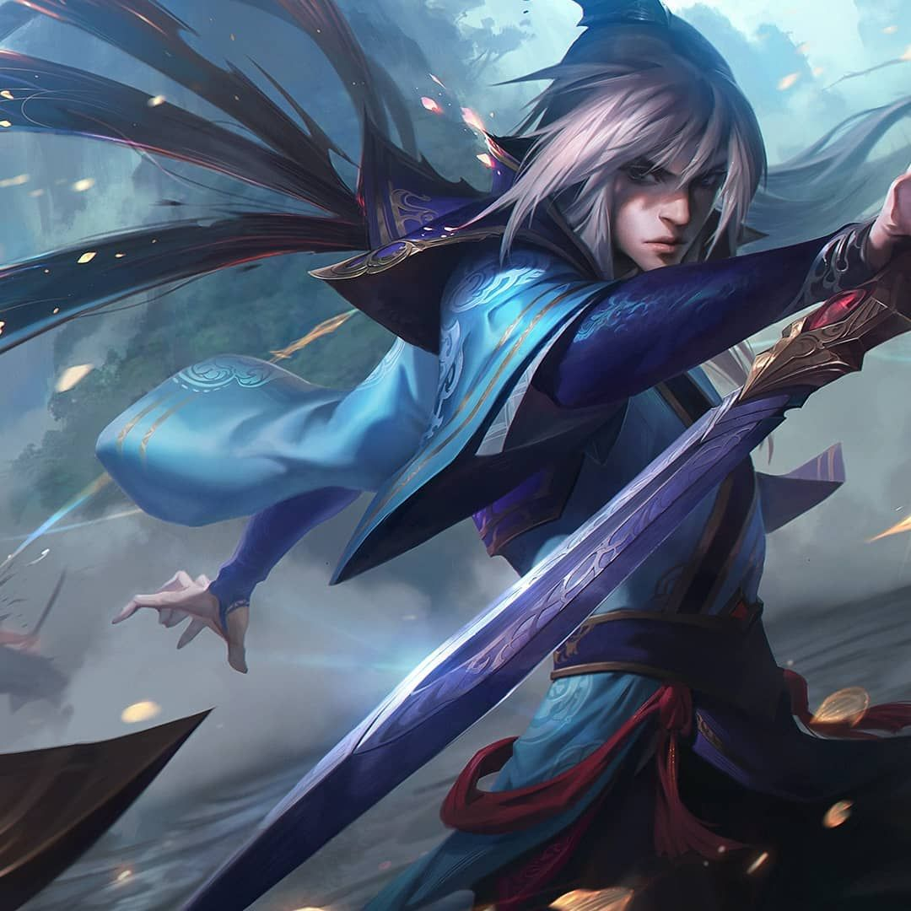
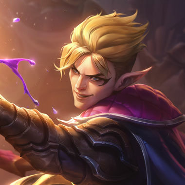
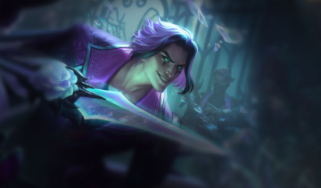
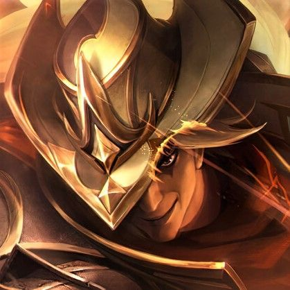
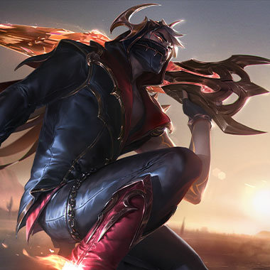
História de Origem e Ascensão:
Originário das sombrias ruas de Noxus, uma das cidades-estado mais poderosas e implacáveis, Talon cresceu entre a criminalidade e a violência. Órfão desde tenra idade, ele encontrou abrigo nas fileiras de um grupo de ladrões, onde sua destreza e habilidades de combate logo o destacaram.
No entanto, o destino de Talon tomou um rumo inesperado quando ele cruzou o caminho de Katarina Du Couteau, a renomada assassina da família mais proeminente de Noxus. Reconhecendo o potencial do jovem rapaz, Katarina trouxe Talon para os aposentos da família Du Couteau, onde ele começou a treinar como um assassino de elite.
A Arte do Assassinato:
Sob a tutela de Katarina e do mestre assassino Du Couteau, Talon refinou suas habilidades com lâminas até atingir a perfeição. Sua agilidade, precisão e proficiência em infiltrar-se nas defesas inimigas fizeram dele um dos agentes mais valiosos de Noxus. No entanto, uma sombra paira sobre seu passado, uma história não contada que continua a impulsioná-lo.
O Domínio das Sombras:
Talon é um mestre na arte do assassinato rápido e silencioso. Ele utiliza suas lâminas arremessadas com precisão mortal e suas táticas de emboscada para eliminar seus alvos antes que eles possam reagir. Seu envolvimento nas batalhas é como uma aparição fugaz, mergulhando nas sombras após cumprir sua missão.
O Legado em League of Legends:
À medida que a história de League of Legends se desenrola, Talon permanece um mistério enigmático e um instrumento sombrio nas mãos de Noxus. Seus próprios objetivos e motivações permanecem obscuras, revelando-se apenas nas pistas que ele deixa para trás, nas histórias contadas pelos sobreviventes e na memória de suas vítimas.
Seja um mestre de combate nas sombras ou um curioso aventureiro, a história de Talon é uma jornada de assassinato, segredos e poder oculto que continua a surpreender e fascinar os jogadores de League of Legends. Enfrente o desafio de dominar suas habilidades letais e desvendar o mistério por trás do Mestre das Sombras Mortais.

.png)
.png)
.png)
.png)